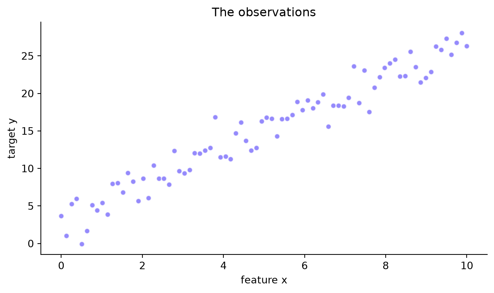
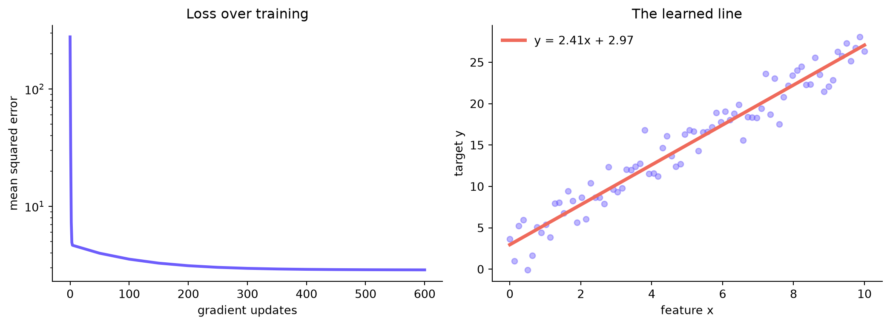

Build linear regression from scratch and watch the loss shrink one update at a time.
Author
Edukron Notes
Published
September 8, 2026
Gradient descent sounds abstract until you can see the two things it repeats: measure how wrong the model is, then nudge its parameters in the direction that makes it less wrong.
We will fit a line, \(\hat{y} = wx + b\), to noisy observations. No machine-learning library will do the optimization for us. By the end, you will be able to explain every line of the training loop.
We move against those gradients using learning rate \(\eta\): \(w \leftarrow w-\eta\nabla_w J\) and \(b \leftarrow b-\eta\nabla_b J\).
Code
import numpy as npimport pandas as pdimport matplotlib.pyplot as pltrng = np.random.default_rng(42)x = np.linspace(0, 10, 80)y =2.4* x +3.0+ rng.normal(0, 2.2, size=x.size)fig, ax = plt.subplots(figsize=(8, 4.2))ax.scatter(x, y, s=28, alpha=.72, color="#6d5dfc", edgecolor="white")ax.set(title="The observations", xlabel="feature x", ylabel="target y")ax.spines[["top", "right"]].set_visible(False)plt.show()

The entire training loop
The loop below saves occasional checkpoints so we can inspect the journey without printing all 600 updates. Notice that prediction, error, gradient, and update each get one small block.
Code
def fit_line_with_gradient_descent(x, y, learning_rate=0.01, steps=600): w, b =0.0, 0.0 history = []for step inrange(steps +1): prediction = w * x + b error = prediction - y loss = np.mean(error **2)if step <5or step %50==0: history.append({"step": step, "w": w, "b": b, "mse": loss}) grad_w =2* np.mean(x * error) grad_b =2* np.mean(error) w -= learning_rate * grad_w b -= learning_rate * grad_breturn w, b, pd.DataFrame(history)w, b, history = fit_line_with_gradient_descent(x, y)history.tail().round(3)
step
w
b
mse
12
400
2.445
2.739
2.899
13
450
2.433
2.819
2.886
14
500
2.424
2.882
2.878
15
550
2.417
2.931
2.873
16
600
2.411
2.969
2.870
The loss should fall quickly at first, then improve in smaller increments. That is expected: far from the minimum, the slope is steep; near the minimum, the same gradient signal becomes small.
Code
fig, axes = plt.subplots(1, 2, figsize=(11, 4.1))axes[0].plot(history["step"], history["mse"], color="#6d5dfc", linewidth=2.5)axes[0].set(title="Loss over training", xlabel="gradient updates", ylabel="mean squared error")axes[0].set_yscale("log")axes[1].scatter(x, y, s=24, alpha=.45, color="#6d5dfc")axes[1].plot(x, w * x + b, color="#ef6a5b", linewidth=3, label=f"y = {w:.2f}x + {b:.2f}")axes[1].set(title="The learned line", xlabel="feature x", ylabel="target y")axes[1].legend(frameon=False)for ax in axes: ax.spines[["top", "right"]].set_visible(False)plt.tight_layout()plt.show()

The learning rate is a step-size decision
A small rate is safe but slow. A useful rate reaches the basin quickly. A large rate can jump across the basin and diverge. Let us compare the first 80 updates.
A loss function turns model quality into a number we can optimize.
A gradient gives a local direction; it does not promise the whole route.
The learning rate controls how aggressively we trust that local direction.
Plotting the loss is a basic diagnostic. nan, oscillation, or a rising curve usually points to an unstable rate, unscaled features, or a bug.
Try next: rescale x by 100 while keeping the learning rate fixed. Then standardize x and compare the two loss curves. You will see why feature scaling changes optimization even when it does not change the best possible fitted line.